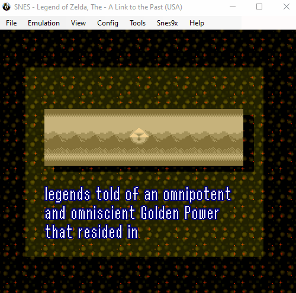
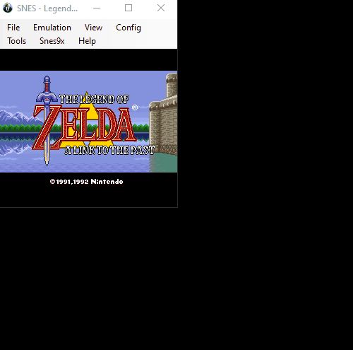

Runner Troubleshooting & FAQ
- What should I expect before/on race day?
- Emulator Paused/Stuck and I can't Unpause.
- How do I resize the emulator?
- How to Save State/Load State.
What should I expect before/on race day?
You're in the race, great! Now what?
Before Raceday...
- If you haven't done Runner Setup yet, go and do that.
- If you have problems, feel free to ask us about it in the discord beforehand.
On Raceday, Before the Race...
- You'll be expected to come into the racer prep room around an hour early (2pm EST) on Saturday to get everything set up. We'll ping the racers letting them know we're starting setup.
- Once we begin setup, a few things will happen:
- We will link you to a sample game to make sure your emulator/controller is working correctly.
- We will give you the address for the Sneakbike server; we'll instruct you on how to put this into your OBS and begin streaming to the Sneakbike server.
- Once we've captured your stream from our server, we will give you the OK and you can relax for a bit.
- After everyone is set up, around ten minutes before the race starts (3pm EST) we will send out the game(s) and the README file in a ZIP bundle.
- We will tell you to open up the first game but DO NOT PLAY IT YET and we will also go through the README with you to make sure there are no questions.
During the Race...
- You will be server-muted in a discord voice channel so that the commentators or ops can give you race instructions.
- We will begin the Sneakbike stream which has a five minute startup plus two-or-so minutes of commentator intro.
- After this time, we will have one of the commentators come into the voice chat (and into the text chat) and give you the 3, 2, 1, GO! countdown to begin the race.
- At this point, you'll start playing.
After the Race...
- We will usually have an after-race brief interview with the runners. We will tell you beforehand, and we will pull you into the commentator room and unmute you. We'll probably ask you how the game was, etc.
- After the interviews are over, we will raid someone. We will have a quick debrief with the runners/commentators/ops after which is optional, but very helpful for us. This is usually around five minutes of us asking what we can do better, what was good and what was bad, etc.
And that's it!
Emulator Paused/Stuck and I can't Unpause.
Sometimes, especially after typing while using BizHawk, the emulator seems to pause and you can't get out of it with the controller. This is because one of the hotkeys for Pause is probably set to something you've typed (see: Config > Hotkeys > "Pause").
The way to fix this is to go into Emulation and see if "Pause" is selected, and unselecting it if it is. See the GIF below:

How do I resize the emulator?
Since going into Full-Screen will mess with your capture of the emulator, you'll need to instead use a scaling factor. Go to View > Window Size and select the desired scaling. It doesn't matter what you use, but runners will generally use 3x or 4x to hit that sweet-spot between too pixelated and too tiny.

How to Save/Load State.
When playing a game, you can Save State to make the emulator remember where you were at that specific time. When you Load State it is like "rewinding" to that time with everything exactly as it was. This is useful in many situations, including trying to practice difficult parts of games.
To save state, go to File > Save State and pick out any of the slots. To load state, go to File > Load State and pick out the slot you saved state in.